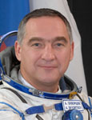

Lyndon B. Johnson Space Center
Houston, Texas 77058
|
National Aeronautics and Space Administration Lyndon B. Johnson Space Center Houston, Texas 77058 |
 |
Biographical Data |
||
SKVORTSOV ALEXANDER ALEXANDROVICH
(COLONEL, RUSSIAN AIR FORCE)
TEST-COSMONAUT OF YU. A. GAGARIN COSMONAUT TRAINING CENTER
PERSONAL DATA: Born May 6, 1966, in Schelkovo, Moscow Region. Married to Skvortsova (nee Krasnikova) Elena Georgievna. They have one daughter, Anna. Hobbies include diving, soccer, badminton, fishing, hunting, and tourism.
EDUCATION: Graduated from the Stavropol Air Force Pilot and Navigator School as pilot-engineer in 1987, and in 1997 from the Military Red Banner ZhukovAir Defense Academy. Currently working on a law degree at the Russian Academy of Civil Service.
AWARDS: 70 years of Soviet Armed Forces medal, Russian Armed Forces Meritorious Service Medal of the 1st, 2nd and 3rd degree, Commendation Medal of 3rd degree, Military Superior Service medal of 2nd degree
EXPERIENCE: Skvortsov flew L-39, МiG-23 and Su-27 aircraft as a pilot, senior pilot and chief of aircraft formation. . Skvortsov has logged around 1000 hours of flight time. He is a Class 1 Air Force pilot, a qualified diver and paraborne instructor.
SPACEFLIGHT TRAINING: Skvortsov was selected as a GCTC cosmonaut-candidate in 1997. From January 1998 to November 1999 he participated in basic spaceflight training. Skvortsov received the qualification of a test-cosmonaut in November, 1999. In January 2000 he started ISS advanced training. Starting March 2008 he trained with the ISS 21/22 backup crew as a flight engineer and Soyuz TMA commander. Since October 2009 he has trained as an ISS 23/24 crewmember - Soyuz commander, ISS 23 flight engineer and ISS 24 commander. He currently lives and works aboard the International Space Station having launched aboard Soyuz TMA-18 on April 2, 2010.
JUNE 2010